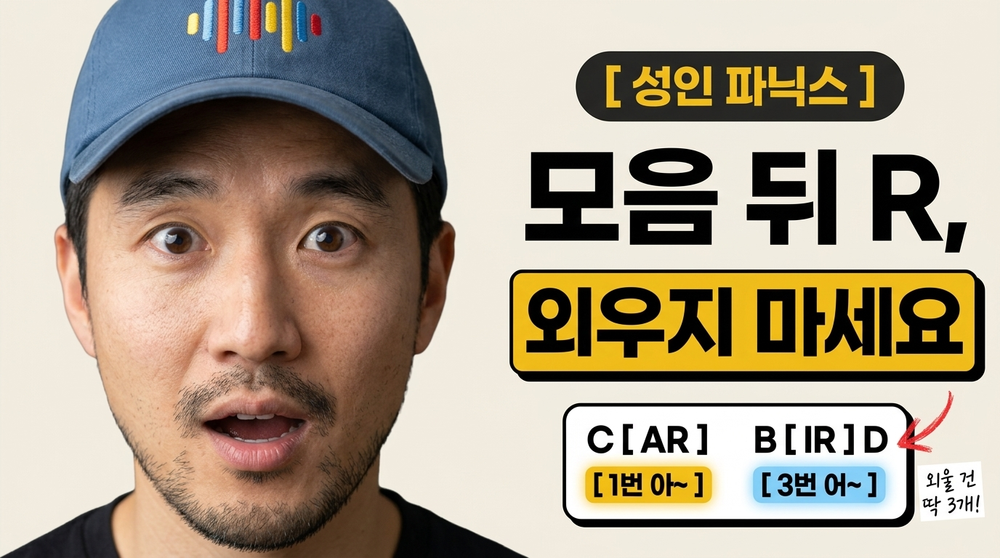

🎬 최종 렌더 비디오 확인 (6분 30초)
H.264 1080p · 24.1 MB
🏷️ 영상 제목 (Title)
발음기호 외우다 지쳤는데, R 하나로 모음 5개가 한 번에 정리됩니다 | 성인 파닉스
🔤 제목 A/B 테스트 후보 (3종)
Studio "제목 및 썸네일 테스트"에 등록
★ 시안 B (기본 게시 · CTR A등급 8.5~11.4%)
발음기호 외우다 지쳤는데, R 하나로 모음 5개가 한 번에 정리됩니다 | 성인 파닉스
시안 A (CTR A-등급 7.8~10.2%)
저도 이제 안 막힙니다, 모음 뒤에 R 붙은 단어 1초 만에 읽는 법 | 영어공부 혼자하기
시안 C (CTR A-등급 8.0~10.6%)
Car, Bird 왜 다를까 했는데... 모음 뒤 R만 보면 바로 읽힙니다 | 파닉스 기초
💡 제목도 A/B 테스트 대상입니다: 유튜브 Studio의 "제목 및 썸네일 테스트"는 썸네일뿐 아니라 제목도 같이 실험할 수 있습니다. B를 기본으로 게시하고, 이 3개 제목을 테스트 후보로 등록하면 실제 시청자 클릭률로 검증할 수 있습니다 — 대시보드에서 CTR 진단만 받고 버리기엔 아까운 시안이라 그대로 남겨둡니다.
📝 영상 설명 (Description & 타임스탬프)
CAR, HER, BIRD, FOR, FUR — 다 아는 쉬운 단어인데, 왜 A는 '애'가 아니라 '아'로, E·I·U는 전부 똑같이 '어'로 읽히는지 생각해 보신 적 있으신가요?
그 답을 모른 채 다섯 개 발음기호부터 외우려니 지치는 겁니다. 사실 외울 건 다섯 개가 아니라 딱 세 가지 소리뿐입니다. 오늘 그 기준 하나만 알면, 모음 뒤에 R이 오는 단어는 더 이상 헷갈리지 않고 바로 읽으실 수 있습니다.
「이해하면 쉬운영어」입니다. 왕초보도 이해할 수 있게, 소리 나는 원리로 설명합니다.
📌 오늘 배우는 내용
・모음 뒤에 R이 붙으면 원래 모음 소리가 통째로 사라지고 R 소리로 바뀌는 원리
・AR(car)과 OR(for)은 각자 독자적인 소리
・ER·IR·UR(her, bird, fur)은 철자만 다를 뿐 완전히 똑같은 소리
・다섯 개 철자를 세 개의 소리 서랍으로 정리하는 법
・앞에 오는 R과 뒤에 오는 R, 혀가 반대로 움직이는 이유
・미니 퀴즈 2라운드 + 문장 리딩 훈련
⏱️ 영상 순서
0:00 CAR, SIR, FOR — 왜 이렇게 읽힐까
0:22 채널 소개
0:34 사전 발음기호 다섯 개, 복잡해 보이는 이유
0:54 반전: 사실은 소리 서랍 세 개뿐입니다
1:32 혀가 뒤로 물러나는 원리 (구강 단면도)
1:53 1번 서랍 AR 소리 실전 낭독
2:22 2번 서랍 OR 소리 실전 낭독
2:53 3번 서랍 ER·IR·UR 소리 실전 낭독
3:27 반전 꿀팁: 앞에 오는 R과 뒤에 오는 R은 방향이 다르다
3:56 실전 퀴즈 1라운드
4:32 실전 퀴즈 2라운드 (스피드)
5:00 문장으로 자연스럽게 읽기 ①
5:24 문장으로 자연스럽게 읽기 ②
5:48 오늘 배운 세 가지 소리 서랍 총정리
6:11 마무리
영어는 무작정 외우는 것이 아니라, 소리의 원리를 이해하는 것입니다.
구독과 좋아요는 다음 영상 제작에 큰 힘이 됩니다.
#영어발음 #파닉스 #영어읽기 #왕초보영어 #영어공부 #영단어 #발음원리 #성인영어 #BossyR
📌 첫 댓글 (고정 댓글 Pinned Comment)
오늘 배운 '소리 서랍 3개'로 직접 읽어보실까요? 영상에는 나오지 않은 새로운 단어들입니다 👀
① BARN
② PORCH
③ SHIRT
④ NURSE (💡 힌트: ③번과 같은 서랍이에요!)
(힌트: AR은 '아~', OR은 '오~', ER·IR·UR은 전부 편안한 '어~' 소리라고 했습니다!)
각 단어의 한글 발음을 댓글로 남겨주세요, 맞았는지 확인해 드릴게요! ✍️
🔍 검색 태그 (Tags)
🖼️ YouTube Test & Compare 썸네일 3종
Studio에서 3종 동시 등록

★ 플래그십 (시안 B)
좌측 대형 클로즈업 + 클린 타이포 ("아하!" 표정)
💡 Test & Compare 팁: 유튜브 스튜디오에서 시안 B를 대표로 지정하고, '동영상 썸네일 테스트 및 비교'를 눌러 나머지 2종을 함께 등록하면 유튜브 AI가 시청자 클릭률을 실시간 비교해 가장 성과 좋은 썸네일을 자동 확정합니다.
⚙️ 유튜브 Studio 필수 설정 항목
권장 예약 일시
2026-09-22(화) 20:00 KST
최종 화면 (엔드스크린) 연결
직전 편 EP16 (모음 2개 나란히) 연결
끝 5초 비워둠
📋 업로드 실행 체크리스트
🌍
📄 가이드 전문 보기
글로벌 다국어 노출 패키지 (자막 파일 & 번역 메타데이터)
미국·일본·남미·동남아 등 전 세계 시청자 및 알고리즘 추천을 위한 원스톱 세팅 자료
🇺🇸 English 자막 파일 (.srt)
63개 구간 정밀 싱크 완료 · 전 세계 공용 및 유튜브 글로벌 검색 인덱싱용
⬇️ subtitles-en.srt 다운로드
🏷️ 영어 번역 제목
Tired of Pronunciation Symbols? How 'R' Explains All 5 Vowels at Once | Phonics Rules
📝 영어 번역 설명 (타임스탬프 챕터 포함)
CAR, HER, BIRD, FOR, FUR — simple words we all know, but have you ever wondered why A sounds like 'ah' instead of 'æ', and why E, I, and U all sound identical as 'er'?
Trying to memorize 5 different phonetic symbols without knowing the principle is exhausting. In reality, you don't need to learn 5 sounds—there are only THREE! Once you learn this single standard, you will never get confused by vowels followed by R.
Welcome to "Easy English When Understood". We explain English by the physical principles of sound so anyone can master it.
⏱️ Timestamps
0:00 CAR, SIR, FOR — Why do they sound this way?
0:22 Welcome & Channel Intro
0:34 Why 5 dictionary symbols look overwhelming
0:54 The Twist: There are only 3 sound drawers!
1:32 Why the tongue pulls back (Mouth diagram)
1:53 Drawer 1: The open AR sound practice
2:22 Drawer 2: The rounded OR sound practice
2:53 Drawer 3: The unified ER/IR/UR sound practice
3:27 Pro Tip: Front R vs Back R direction difference
3:56 3-Second Quiz Round 1
4:32 3-Second Quiz Round 2 (Speed)
5:00 Sentence Reading ①
5:24 Sentence Reading ②
5:48 One-Sheet Summary Map
6:11 Closing
#EnglishPronunciation #Phonics #BossyR #ESL #LearnEnglish #EnglishReading
🇯🇵 日本語 자막 파일 (.srt)
63개 구간 정밀 싱크 완료 · 일본 영어 학습자 타겟 (가타카나 발음 한계 극복)
⬇️ subtitles-ja.srt 다운로드
🏷️ 일본어 번역 제목
発音記号の暗記に疲れた方へ！R一つで母音5つが一気に整理される法則 | 大人のフォニックス
📝 일본어 번역 설명 (타임스탬프 챕터 포함)
CAR, HER, BIRD, FOR, FUR — 誰もが知っている簡単な単語なのに、なぜ A は「エ」ではなく「アー」になり、E・I・U はすべて同じ「アー(er)」と発音されるのか疑問に思ったことはありませんか？
その仕組みを知らないまま辞書の発音記号を丸暗記しようとするから疲れてしまうのです。実は覚えるべき音は5つではなく、たったの「3つ」だけ！今日のルールを一つ知るだけで、母音＋Rの単語で迷うことはもう二度となくなります。
「理解すれば簡単な英語」へようこそ。初心者でも納得できるよう、発音の原理から分かりやすく解説します。
⏱️ タイムスタンプ
0:00 CAR, SIR, FOR — なぜこう読まれるのか？
0:22 チャンネル紹介
0:34 辞書の発音記号が複雑に見える理由
0:54 大反転：実は「3つの音の引き出し」だけ！
1:32 舌が後ろへ引っ込む原理（口内断面図）
1:53 1番の引き出し：AR音の実践音読
2:22 2番の引き出し：OR音の実践音読
2:53 3番の引き出し：ER・IR・UR音の実践音読
3:27 ワンポイント解説：前Rと後Rは舌の向きが違う！
3:56 3秒クイズ 第1ラウンド
4:32 3秒クイズ 第2ラウンド（スピード）
5:00 例文で自然に読む ①
5:24 例文で自然に読む ②
5:48 まとめシート
6:11 エンディング
#英語発音 #フォニックス #大人のやり直し英語 #英語の読み方 #BossyR #英語独学
🇹🇼 繁體中文 자막 파일 (.srt)
63개 구간 정밀 싱크 완료 · 대만·홍콩 영어 학습자 타겟 (유튜브 시청률 1위 권역)
⬇️ subtitles-zh-tw.srt 다운로드
🏷️ 번체자 번역 제목
別再死記音標了！只要一個 R，5個母音發音一次全搞定 | 成人自然拼讀
📝 번체자 번역 설명 (타임스탬프 챕터 포함)
CAR, HER, BIRD, FOR, FUR — 明明都是最簡單的單字，但你有沒有想過，為什麼 A 不唸「æ」而是唸「ah」，為什麼 E、I、U 拼字全都不一樣，發音卻一模一樣全是「er」？
在不知道發音原理的情況下，光看字典裡 5 個不同的音標死記硬背，當然會覺得非常挫折。其實需要記的不是 5 個音，而是只有「3 個聲音」而已！只要掌握今天這套標準，以後遇到任何母音後面帶 R 的單字，你都能毫不猶豫、一眼唸對。
歡迎來到「理解就變簡單的英語」。我們用最直觀的發音生理原理，讓初學者也能徹底理解。
⏱️ 時間軸
0:00 CAR, SIR, FOR — 為什麼會這樣發音？
0:22 頻道介紹
0:34 字典裡的 5 個音標為什麼讓人頭痛
0:54 驚人反轉：其實只有「3 個聲音抽屜」！
1:32 舌頭往後縮的物理原理（口腔剖面圖）
1:53 1號抽屜：AR 掉下巴發音實戰朗讀
2:22 2號抽屜：OR 圓唇發音實戰朗讀
2:53 3號抽屜：ER·IR·UR 統一發音實戰朗讀
3:27 核心秘訣：前 R 與後 R 舌頭方向完全相反！
3:56 3秒實戰測驗 第1回合
4:32 3秒實戰測驗 第2回合（極速）
5:00 句子自然朗讀練習 ①
5:24 句子自然朗讀練習 ②
5:48 一張圖總結精華複習
6:11 結語
#英語發音 #自然拼讀 #Phonics #BossyR #零基礎英語 #成人學英語
🇨🇳 简体中文 자막 파일 (.srt)
63개 구간 정밀 싱크 완료 · 싱가포르·말레이시아 및 글로벌 화교 타겟
⬇️ subtitles-zh-cn.srt 다운로드
🏷️ 간체자 번역 제목
别再死记音标了！只要一个 R，5个元音发音一次全搞定 | 成人自然拼读
📝 간체자 번역 설명 (타임스탬프 챕터 포함)
CAR, HER, BIRD, FOR, FUR — 明明都是最简单的单词，但你有没有想过，为什么 A 不念“æ”而是念“ah”，为什么 E、I、U 拼写完全不同，发音却一模一样全是“er”？
在不知道发音原理的情况下，光看字典里 5 个不同的音标死记硬背，当然会觉得非常受挫。其实需要记的不是 5 个音，而是只有“3 个声音”而已！只要掌握今天这套标准，以后遇到任何元音后面带 R 的单词，你都能毫不犹豫、一眼读对。
欢迎来到“理解就变简单的英语”。我们用最直观的发音生理原理，让初学者也能彻底理解。
⏱️ 时间戳
0:00 CAR, SIR, FOR — 为什么会这样发音？
0:22 频道介绍
0:34 字典里的 5 个音标为什么让人头痛
0:54 惊人反转：其实只有“3 个声音抽屉”！
1:32 舌头往后缩的物理原理（口腔剖面图）
1:53 1号抽屉：AR 掉下巴发音实战朗读
2:22 2号抽屉：OR 圆唇发音实战朗读
2:53 3号抽屉：ER·IR·UR 统一发音实战朗读
3:27 核心秘诀：前 R 与后 R 舌头方向完全相反！
3:56 3秒实战测验 第1回合
4:32 3秒实战测验 第2回合（极速）
5:00 句子自然朗读练习 ①
5:24 句子自然朗读练习 ②
5:48 一张图总结精华复习
6:11 结语
#英语发音 #自然拼读 #Phonics #BossyR #零基础英语 #成人学英语
🇪🇸 Español 자막 파일 (.srt)
63개 구간 정밀 싱크 완료 · 미국 히스패닉 & 중남미 영어 초보자 타겟
⬇️ subtitles-es.srt 다운로드
🏷️ 스페인어 번역 제목
¿Cansado de los símbolos fonéticos? Cómo la 'R' explica las 5 vocales en solo 3 sonidos | Fonética
📝 스페인어 번역 설명 (타임스탬프 챕터 포함)
CAR, HER, BIRD, FOR, FUR — palabras sencillas que todos conocemos, pero ¿te has preguntado por qué A suena 'ah' y por qué E, I, U suenan exactamente igual como 'er'?
Tratar de memorizar 5 símbolos fonéticos sin entender el principio es agotador. En realidad, no son 5 sonidos: ¡son solo TRES! Al dominar este criterio, nunca más dudarás al leer vocales seguidas de R.
Bienvenidos a "Inglés Fácil Si Lo Entiendes". Explicamos las reglas mediante los principios físicos del sonido.
⏱️ Marcas de tiempo
0:00 CAR, SIR, FOR —¿Por qué se leen así?
0:22 Introducción
0:34 Por qué 5 símbolos de diccionario parecen difíciles
0:54 El gran giro: ¡Solo hay 3 cajones de sonido!
1:32 Por qué la lengua retrocede (diagrama de la boca)
1:53 Cajón 1: Práctica del sonido AR abierto
2:22 Cajón 2: Práctica del sonido OR redondeado
2:53 Cajón 3: Práctica del sonido unificado ER/IR/UR
3:27 Consejo clave: R inicial vs R final
3:56 Mini Quiz Ronda 1
4:32 Mini Quiz Ronda 2 (Velocidad)
5:00 Lectura en oraciones ①
5:24 Lectura en oraciones ②
5:48 Hoja de resumen final
6:11 Cierre
#PronunciacionIngles #FoneticaIngles #AprenderIngles #InglesBasico #BossyR
🇻🇳 Tiếng Việt 자막 파일 (.srt)
63개 구간 정밀 싱크 완료 · 동남아 1위 영어 교육 수요국 베트남 타겟
⬇️ subtitles-vi.srt 다운로드
🏷️ 베트남어 번역 제목
Hết sợ ký hiệu phiên âm! Chỉ với chữ R, 5 nguyên âm tiếng Anh được giải quyết gọn gàng
📝 베트남어 번역 설명 (타임스탬프 챕터 포함)
CAR, HER, BIRD, FOR, FUR — những từ quen thuộc ai cũng biết, nhưng bạn có từng thắc mắc vì sao A đọc là 'a' và vì sao E, I, U lại đọc y hệt nhau là 'ơ (er)'?
Cố học thuộc 5 ký hiệu phiên âm mà không hiểu nguyên lý khiến bạn nhanh nản. Thực tế, bạn không cần nhớ 5 âm — chỉ có ĐÚNG 3 ÂM! Nắm được quy tắc này, bạn sẽ tự tin đọc chuẩn mọi từ có nguyên âm đi với R.
Chào mừng bạn đến với "Hiểu Đúng Thì Tiếng Anh Rất Dễ". Học tiếng Anh qua nguyên lý tự nhiên của âm thanh.
⏱️ Mốc thời gian
0:00 CAR, SIR, FOR — Vì sao lại đọc như vậy?
0:22 Giới thiệu
0:34 Vì sao 5 ký hiệu từ điển trông phức tạp
0:54 Bất ngờ: Thực ra chỉ có 3 ngăn âm!
1:32 Vì sao lưỡi rụt về sau (sơ đồ khoang miệng)
1:53 Ngăn 1: Luyện đọc âm AR hạ hàm
2:22 Ngăn 2: Luyện đọc âm OR chu môi
2:53 Ngăn 3: Luyện đọc âm hợp nhất ER/IR/UR
3:27 Mẹo quan trọng: R đi trước vs R đi sau
3:56 Câu đố 3 giây Vòng 1
4:32 Câu đố 3 giây Vòng 2
5:00 Luyện đọc trong câu ①
5:24 Luyện đọc trong câu ②
5:48 Bảng tóm tắt
6:11 Lời kết
#PhatAmTiengAnh #HocTiengAnh #TiengAnhGiaoTiep #Phonics #BossyR
🇰🇷 한국어 자막 파일 (.srt)
63개 구간 정밀 싱크 완료 · 한국어 음성 100% 일치 기본 자막
⬇️ subtitles-ko.srt 다운로드
🏷️ 한국어 원본 제목
발음기호 외우다 지쳤는데, R 하나로 모음 5개가 한 번에 정리됩니다 | 성인 파닉스
📝 한국어 원본 설명
CAR, HER, BIRD, FOR, FUR — 다 아는 쉬운 단어인데, 왜 A는 '애'가 아니라 '아'로, E·I·U는 전부 똑같이 '어'로 읽히는지 생각해 보신 적 있으신가요?
그 답을 모른 채 다섯 개 발음기호부터 외우려니 지치는 겁니다. 사실 외울 건 다섯 개가 아니라 딱 세 가지 소리뿐입니다. 오늘 그 기준 하나만 알면, 모음 뒤에 R이 오는 단어는 더 이상 헷갈리지 않고 바로 읽으실 수 있습니다.
「이해하면 쉬운영어」입니다. 왕초보도 이해할 수 있게, 소리 나는 원리로 설명합니다.
⏱️ 영상 순서
0:00 CAR, SIR, FOR — 왜 이렇게 읽힐까
0:22 채널 소개
0:34 사전 발음기호 다섯 개, 복잡해 보이는 이유
0:54 반전: 사실은 소리 서랍 세 개뿐입니다
1:32 혀가 뒤로 물러나는 원리 (구강 단면도)
1:53 1번 서랍 AR 소리 실전 낭독
2:22 2번 서랍 OR 소리 실전 낭독
2:53 3번 서랍 ER·IR·UR 소리 실전 낭독
3:27 반전 꿀팁: 앞에 오는 R과 뒤에 오는 R은 방향이 다르다
3:56 실전 퀴즈 1라운드
4:32 실전 퀴즈 2라운드 (스피드)
5:00 문장으로 자연스럽게 읽기 ①
5:24 문장으로 자연스럽게 읽기 ②
5:48 오늘 배운 세 가지 소리 서랍 총정리
6:11 마무리
#영어발음 #파닉스 #영어읽기 #왕초보영어 #BossyR
💡 YouTube Studio 3분 등록법:
1. 유튜브 스튜디오 영상 수정 ➔ 왼쪽 [자막] 메뉴 클릭
2. [언어 추가] 클릭 후 위 4개 언어(영어, 일본어, 스페인어, 베트남어) 추가
3. 각 언어의 [제목 및 설명]에 위 번역문을 복사 붙여넣고, [자막]에 위 다운로드한
1. 유튜브 스튜디오 영상 수정 ➔ 왼쪽 [자막] 메뉴 클릭
2. [언어 추가] 클릭 후 위 4개 언어(영어, 일본어, 스페인어, 베트남어) 추가
3. 각 언어의 [제목 및 설명]에 위 번역문을 복사 붙여넣고, [자막]에 위 다운로드한
.srt 파일을 업로드하면 즉시 완료됩니다!